학습 목표 (Learning Objectives)
- ✓중위도(온대) 저기압과 고기압이 통과할 때 기온, 기압, 풍향, 강수 등 날씨의 변화를 설명할 수 있다.
- ✓일기도, 위성 영상(가시·적외), 레이더 영상을 종합하여 날씨의 변화를 예측할 수 있다.
핵심 개념 체크리스트
학습을 마친 개념은 직접 체크해보세요!
2026 사대부고 고2 지구과학 자체 교재 원문 기반
동기 유발 · 생각해보기
수업 시작 전 핵심 질문
Q. 우리는 내일 날씨를 알기 위해 매일 일기 예보를 확인한다. 기상청은 보이지 않는 대기의 움직임과 미래의 날씨를 어떻게 정확히 관측하고 예측할까?
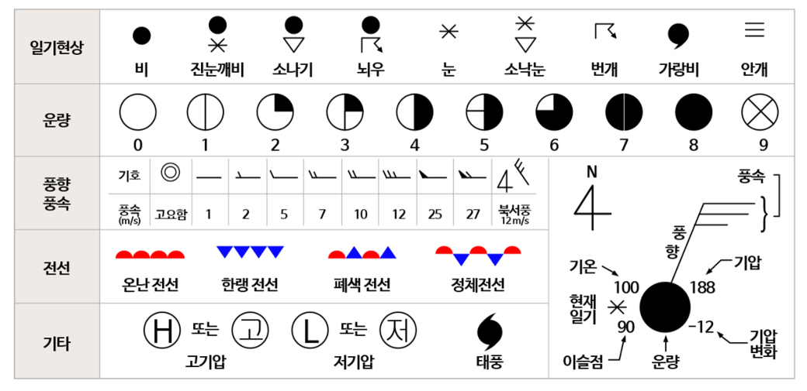
💡 먼저 스스로 이유를 추론해 본 뒤 버튼을 눌러 확인해보세요!
✨ 과학적 해설 및 모범 답안
지상 관측소, 레윈존데(고층 기상 관측), 기상 레이더, 정지 궤도 기상 위성(천리안 위성 등)을 통해 기온·기압·풍향·풍속·습도·구름 분포를 입체적으로 관측합니다. 이 데이터를 바탕으로 일기도를 작성하고 슈퍼컴퓨터 수치 예보 모델로 공기 덩어리(기단과 전선)의 이동을 계산하여 미래 날씨를 예측합니다.
핵심 개념 1
1. 일기도, 위성 영상, 레이더 영상 판독
(1) 지상 일기도와 기상 위성 영상 비교
- •지상 일기도: 등압선(보통 $4\text{ hPa}$ 간격)과 일기 기호를 나타낸 그림. 등압선 간격이 좁을수록 풍속이 강하다.
- •위성 영상 (가시 영상 vs 적외 영상): 두 영상을 함께 비교하면 구름의 두께와 최상부 높이(운정 고도)를 동시에 구분할 수 있다.
- •레이더 영상: 마이크로파(전파)를 발사하여 강수 입자에 반사되어 돌아오는 신호를 분석하므로 실제 비나 눈이 내리는 강수 구역의 위치, 강도, 이동 방향을 실시간으로 파악한다.
| 구분 | 가시 영상 (Visible) | 적외 영상 (Infrared) |
|---|---|---|
| 관측 파장 및 원리 | 구름이 반사한 태양의 가시광선 세기 관측 | 구름 자체가 온도에 따라 방출하는 지구 복사(적외선) 에너지 관측 |
| 밝게(하얗게) 보이는 조건 | 반사율이 클수록 ➔ 구름의 두께가 두꺼울수록 밝음 | 방출 에너지가 적고 온도가 낮을수록 ➔ 구름 최상부 높이(운정 고도)가 높을수록(상층운) 밝음 |
| 어둡게 보이는 조건 | 구름이 얇거나 맑은 지역 | 구름 높이가 낮아 온도가 높은 하층운 또는 지표면 |
| 관측 가능 시간 | 태양 빛이 있는 낮에만 관측 가능 | 낮과 밤 24시간 내내 관측 가능 |
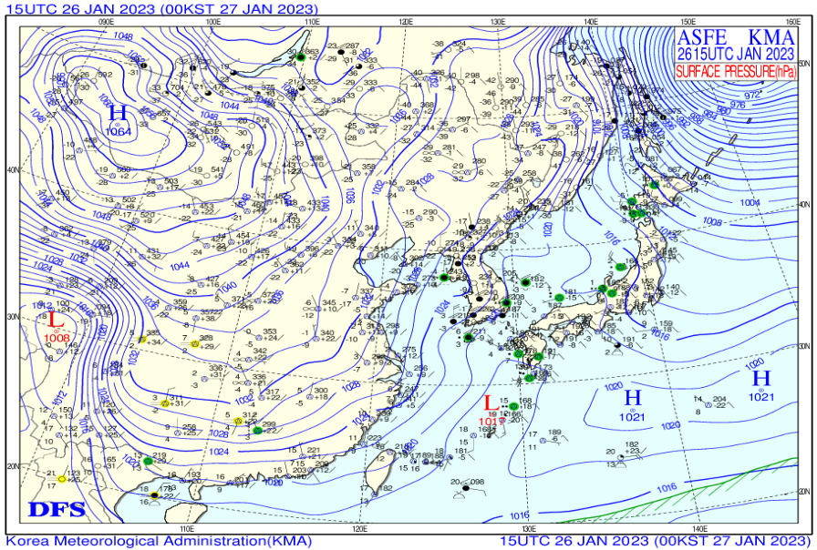
" class="max-h-72 w-auto object-contain rounded-lg group-hover:scale-[1.02] transition duration-300 cursor-zoom-in" onclick="openLightbox(this.src, '교재 그림: <지상 일기도와 일기 기호>')" loading="lazy" />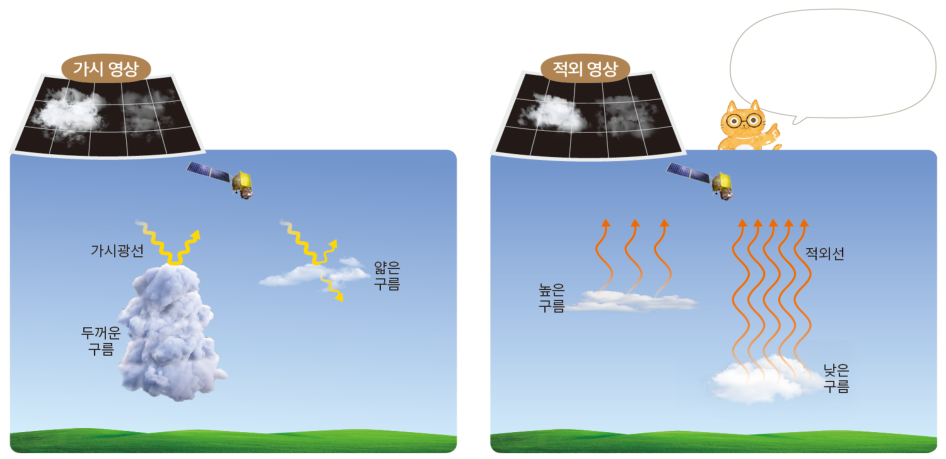
" class="max-h-72 w-auto object-contain rounded-lg group-hover:scale-[1.02] transition duration-300 cursor-zoom-in" onclick="openLightbox(this.src, '교재 그림: <기상 위성 가시 영상>')" loading="lazy" />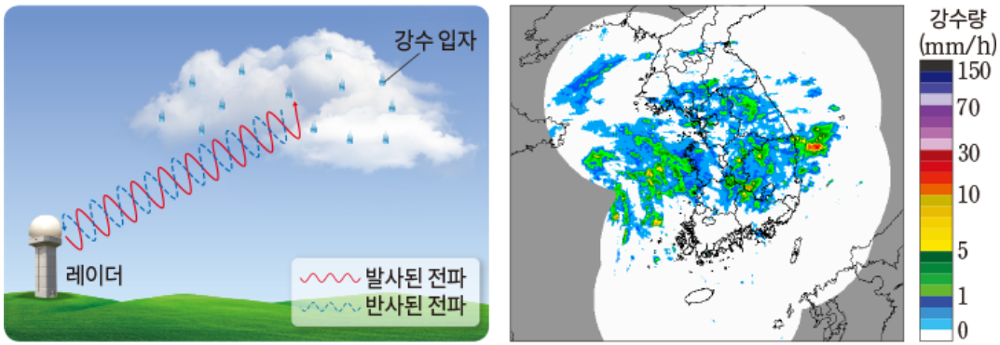
" class="max-h-72 w-auto object-contain rounded-lg group-hover:scale-[1.02] transition duration-300 cursor-zoom-in" onclick="openLightbox(this.src, '교재 그림: <기상 위성 적외 영상 및 레이더 영상>')" loading="lazy" />
핵심 개념 2
2. 고기압과 우리나라의 계절별 날씨
(1) 고기압과 저기압에서의 공기 운동 (북반구 기준)
- •고기압 ($H$): 지상에서 바람이 시계 방향으로 불어 나감(발산) ➔ 중심부 하강 기류 ➔ 단열 압축 ➔ 기온 상승 ➔ 구름 소멸 및 맑은 날씨
- •저기압 ($L$): 지상에서 바람이 시계 반대 방향으로 불어 들어옴(수렴) ➔ 중심부 상승 기류 ➔ 단열 팽창 ➔ 기온 하강 ➔ 구름 생성 및 흐리고 비/눈
- •정체성 고기압과 계절별 날씨:
▸ 봄·가을: 양쯔강 기단에서 떨어져 나온 이동성 고기압과 저기압이 편서풍을 타고 주기적으로 통과하여 날씨 변화가 심함 (봄철 황사, 꽃샘추위)
▸ 초여름: 오호츠크해 기단(한랭 다습)과 북태평양 기단(고온 다습)이 만나 장마 전선(정체 전선) 형성
▸ 여름: 북태평양 고기압의 영향으로 무덥고 습하며 남동 계절풍이 붊
▸ 겨울: 시베리아 고기압의 영향으로 춥고 건조하며 북서 계절풍이 붊
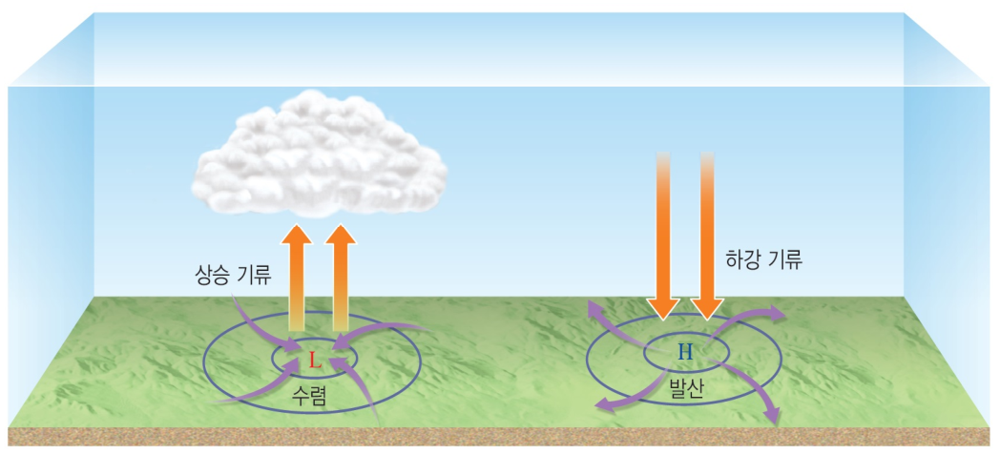
" class="max-h-72 w-auto object-contain rounded-lg group-hover:scale-[1.02] transition duration-300 cursor-zoom-in" onclick="openLightbox(this.src, '교재 그림: <북반구 고기압과 저기압에서의 바람과 연직 기류>')" loading="lazy" />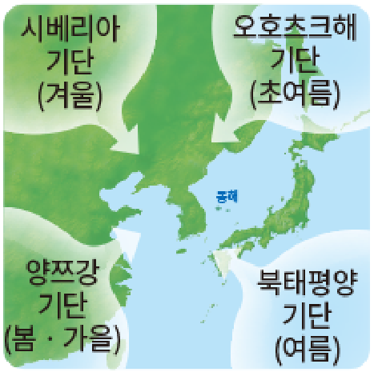
" class="max-h-72 w-auto object-contain rounded-lg group-hover:scale-[1.02] transition duration-300 cursor-zoom-in" onclick="openLightbox(this.src, '교재 그림: <우리나라에 영향을 미치는 기단(정체성 고기압)>')" loading="lazy" />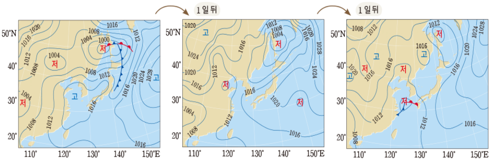
" class="max-h-72 w-auto object-contain rounded-lg group-hover:scale-[1.02] transition duration-300 cursor-zoom-in" onclick="openLightbox(this.src, '교재 그림: <편서풍에 의한 이동성 고기압의 이동>')" loading="lazy" />
핵심 개념 3
3. 전선과 중위도(온대) 저기압
(1) 한랭 전선과 온난 전선의 비교 (교재 p.15 표 완성)
- •전선과 전선면: 성질이 다른 찬 기단과 따뜻한 기단이 만나 이루는 경계면을 전선면이라 하고, 전선면이 지표면과 만나는 선을 전선이라 한다.
- •중위도(온대) 저기압의 에너지원: 찬 공기가 아래로 파고들고 따뜻한 공기가 위로 상승하면서 위치 에너지가 운동 에너지로 전환되는 것이 에너지원이다.
| 구분 | 한랭 전선 (남서쪽 발달) | 온난 전선 (남동쪽 발달) |
|---|---|---|
| 형성 원리 | 찬 공기가 따뜻한 공기 아래를 파고들며 급격히 밀어 올릴 때 | 따뜻한 공기가 찬 공기 위를 따라 천천히 타고 올라갈 때 |
| 전선면 기울기 및 이동 속도 | 기울기가 급함 / 이동 속도가 빠름 | 기울기가 완만함 / 이동 속도가 느림 |
| 구름 형태 및 강수 특징 | 적운형 구름(적란운) / 전선 뒤쪽(후면) 좁은 구역에 강한 소나기 | 층운형 구름(난층운·권층운) / 전선 앞쪽(전면) 넓은 구역에 지속적인 이슬비 |
| 통과 후 기온·풍향 변화 | 기온 하강, 기압 상승, 풍향 남서풍 ➔ 북서풍 급변 | 기온 상승, 기압 하강, 풍향 남동풍 ➔ 남서풍 변화 |
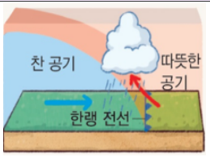
" class="max-h-72 w-auto object-contain rounded-lg group-hover:scale-[1.02] transition duration-300 cursor-zoom-in" onclick="openLightbox(this.src, '교재 그림: <한랭 전선의 단면>')" loading="lazy" />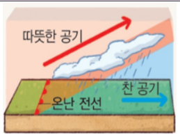
" class="max-h-72 w-auto object-contain rounded-lg group-hover:scale-[1.02] transition duration-300 cursor-zoom-in" onclick="openLightbox(this.src, '교재 그림: <온난 전선의 단면>')" loading="lazy" />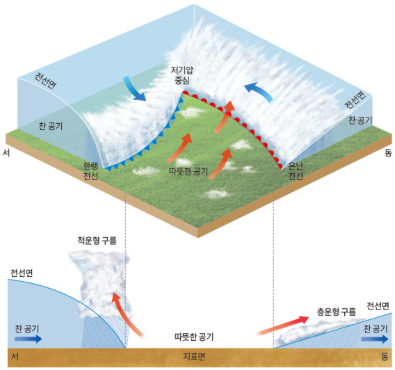
" class="max-h-72 w-auto object-contain rounded-lg group-hover:scale-[1.02] transition duration-300 cursor-zoom-in" onclick="openLightbox(this.src, '교재 그림: <중위도(온대) 저기압의 평면 및 단면 구조>')" loading="lazy" />(2) 온대 저기압의 일생과 중규모 저기압
- •발생과 소멸 (5~7일): 정체 전선 형성 ➔ 파동 발생 ➔ 온대 저기압 발달 ➔ 이동 속도가 빠른 한랭 전선이 온난 전선을 따라잡아 폐색 전선 형성 ➔ 찬 공기가 아래를 모두 채워 위치 에너지가 소진되면서 소멸
- •⭐ 관측소 통과 시 풍향 변화: 온대 저기압 중심의 남쪽을 통과하는 관측소에서는 남동풍(온난 전선 전면) ➔ 남서풍(전선 사이) ➔ 북서풍(한랭 전선 후면)으로 풍향이 시계 방향으로 변한다.
- •중규모 저기압: 전선을 동반하지 않고 좁은 지역에서 짧은 시간 동안 강한 상승 기류로 발달하여 일기도에 잘 나타나지 않으나 강한 소나기·뇌우를 유발한다.
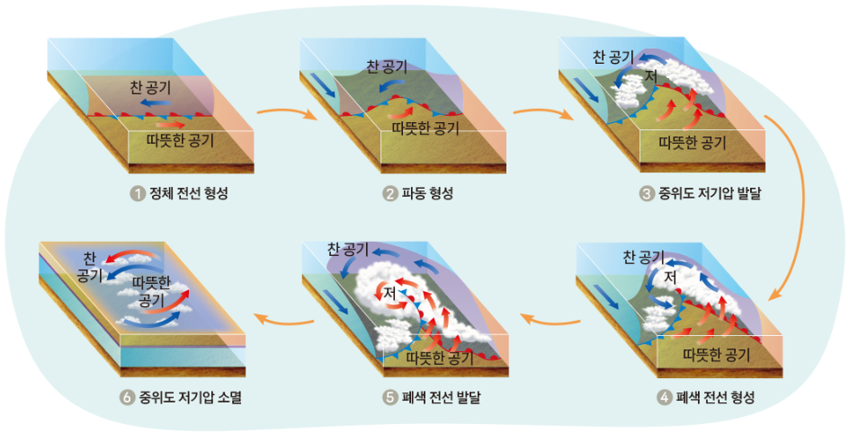
" class="max-h-72 w-auto object-contain rounded-lg group-hover:scale-[1.02] transition duration-300 cursor-zoom-in" onclick="openLightbox(this.src, '교재 그림: <중위도 저기압의 발생·발달·폐색·소멸 과정>')" loading="lazy" />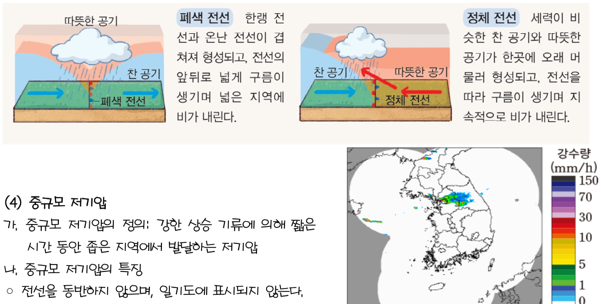
" class="max-h-72 w-auto object-contain rounded-lg group-hover:scale-[1.02] transition duration-300 cursor-zoom-in" onclick="openLightbox(this.src, '교재 그림: <중규모 저기압이 발생했을 때의 레이더 영상>')" loading="lazy" />
Interactive Checkpoints
클릭하면 교재 빈칸 정답과 해설이 나타납니다
단원 개념 적용하기 & 확인 문제
Q1
교재 p.12 확인: 가시 영상에서는 매우 어둡게(흐릿하게) 보이지만, 적외 영상에서는 매우 밝게(하얗게) 보이는 구름은 어떤 구름인가?
모범 답안 및 해설
두께는 얇지만 구름 최상부 높이(운정 고도)가 매우 높은 상층운(권운 등)입니다. 두께가 얇아 가시광선 반사율은 낮지만, 고도가 높아 온도가 매우 낮으므로 적외 영상에서는 하얗게 보입니다.
Q2
교재 p.15 핵심: 온대 저기압이 우리나라를 서쪽에서 동쪽으로 통과할 때, 온난 전선 통과 전 ➔ 두 전선 사이 ➔ 한랭 전선 통과 후의 풍향과 날씨 변화를 순서대로 설명하시오.
모범 답안 및 해설
① 온난 전선 전면: 남동풍이 불고 층운형 구름에서 넓은 지역에 이슬비가 내립니다.② 전선 사이(온난 구역): 남서풍이 불고 날씨가 맑으며 기온이 높습니다.
③ 한랭 전선 후면: 북서풍이 불고 기온이 급강하하며 적운형 구름(적란운)에서 좁은 지역에 강한 소나기가 내립니다.